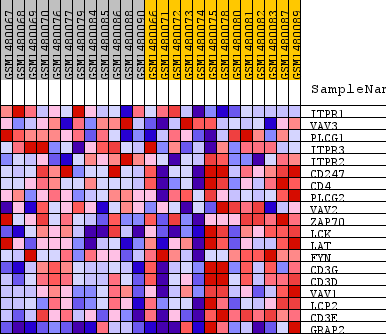
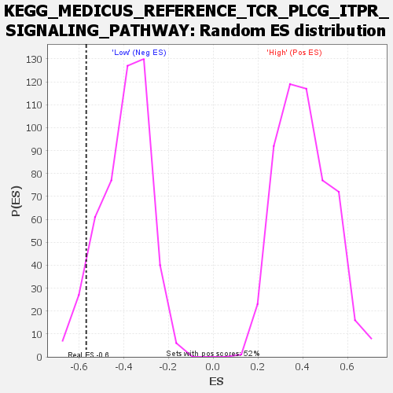

Profile of the Running ES Score & Positions of GeneSet Members on the Rank Ordered List
| Dataset | WG6v3.MRPL3.cls#High_versus_Low.MRPL3.cls#High_versus_Low_repos |
| Phenotype | MRPL3.cls#High_versus_Low_repos |
| Upregulated in class | Low |
| GeneSet | KEGG_MEDICUS_REFERENCE_TCR_PLCG_ITPR_SIGNALING_PATHWAY |
| Enrichment Score (ES) | -0.56812924 |
| Normalized Enrichment Score (NES) | -1.4409586 |
| Nominal p-value | 0.06526316 |
| FDR q-value | 1.0 |
| FWER p-Value | 1.0 |
| SYMBOL | TITLE | RANK IN GENE LIST | RANK METRIC SCORE | RUNNING ES | CORE ENRICHMENT | |
|---|---|---|---|---|---|---|
| 1 | ITPR1 | ITPR1 | 488 | 0.154 | 0.0983 | No |
| 2 | VAV3 | VAV3 | 2313 | 0.054 | 0.0478 | No |
| 3 | PLCG1 | PLCG1 | 3453 | 0.035 | 0.0175 | No |
| 4 | ITPR3 | ITPR3 | 3850 | 0.030 | 0.0215 | No |
| 5 | ITPR2 | ITPR2 | 5277 | 0.018 | -0.0379 | No |
| 6 | CD247 | CD247 | 10486 | -0.005 | -0.3026 | No |
| 7 | CD4 | CD4 | 10767 | -0.006 | -0.3125 | No |
| 8 | PLCG2 | PLCG2 | 12235 | -0.012 | -0.3789 | No |
| 9 | VAV2 | VAV2 | 13008 | -0.016 | -0.4060 | No |
| 10 | ZAP70 | ZAP70 | 13596 | -0.019 | -0.4207 | No |
| 11 | LCK | LCK | 15577 | -0.036 | -0.4939 | No |
| 12 | LAT | LAT | 16372 | -0.046 | -0.4980 | No |
| 13 | FYN | FYN | 17734 | -0.070 | -0.5118 | Yes |
| 14 | CD3G | CD3G | 18116 | -0.082 | -0.4661 | Yes |
| 15 | CD3D | CD3D | 18280 | -0.088 | -0.4043 | Yes |
| 16 | VAV1 | VAV1 | 18296 | -0.088 | -0.3344 | Yes |
| 17 | LCP2 | LCP2 | 18672 | -0.108 | -0.2673 | Yes |
| 18 | CD3E | CD3E | 19214 | -0.165 | -0.1626 | Yes |
| 19 | GRAP2 | GRAP2 | 19365 | -0.216 | 0.0029 | Yes |

